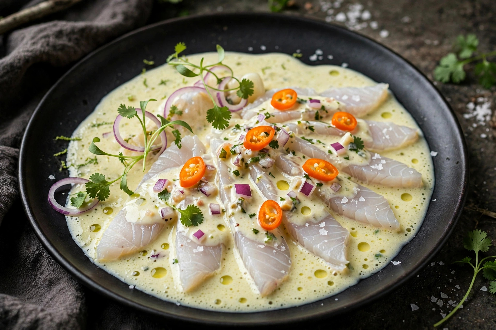

Identificación
- Nombre:Tiradito
- Código:TDO - 001
- Categoria:Entrada
- Cocina:Peruana
- Versión:1.0
Rendimiento y Porciones
Rendimiento:
1 porción
Para una porción:
160 g de pescado
Ingredientes
Ingrediente
Cant.
Und.
Pescado blanco
160
g
Jugo de limón
50
ml
Ají Amarillo
30
g
Cebolla Roja
20
g
Cilantro
3
g
Sal
2
g
Hielo
1
und
PB / PN / Merma - Peso Bruto y Peso Neto del Insumo Principal
Peso bruto: No PB establecido
Peso neto: 160 g
Merma: No merma establecida
Procedimiento
- Recepcionar y verificar el pescado según los criterios establecidos.
- Limpiar y retirar las partes no utilizables.
- Cortar el pescado en finas láminas de 2-3mm tipo Sashimi.
- Acomodar en un plato frío en diagonal de modo que quede bonito.
- Licuar aji amarillo, cilantro, 5 g de cebolla roja, 2 laminas de sashimi de pescado, sal, limón y un cubito de hielo
- Colar y reservar.
- Servicio del plato
- Bañar todo el pescado con la leche de tigre que licuamos.
- Colocamos el resto de la cebolla roja y decoramos con una pizca de cilantro solo para dar color, por encima del pescado, la cebolla y el plato.
Presentación

Control de Calidad
- Pescado fresco y frio
- Corte de sashimi obligatorio
- Cebolla corretamente distribuída
- Montaje limpio
- Presentación consistente
- Acidez
- Salinidad
- Picor
- Notas aromáticas
Apariencia
Sabor
Textura
El pescado debe conservar las características esperadas para la preparación
Temperatura
2 - 4°C debe mantenerse
Porción
Debe respetarse el gramaje establecido